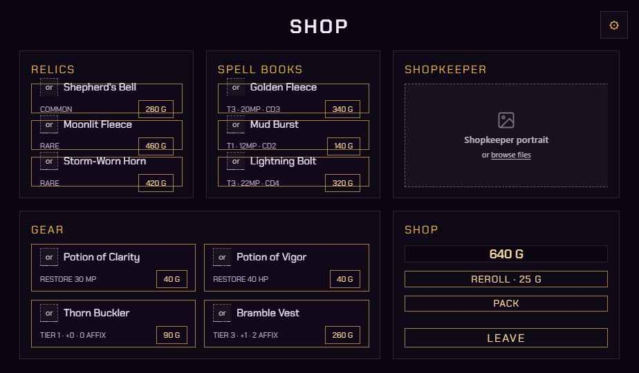
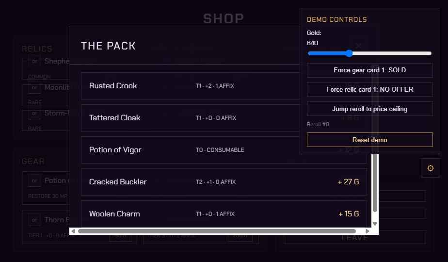
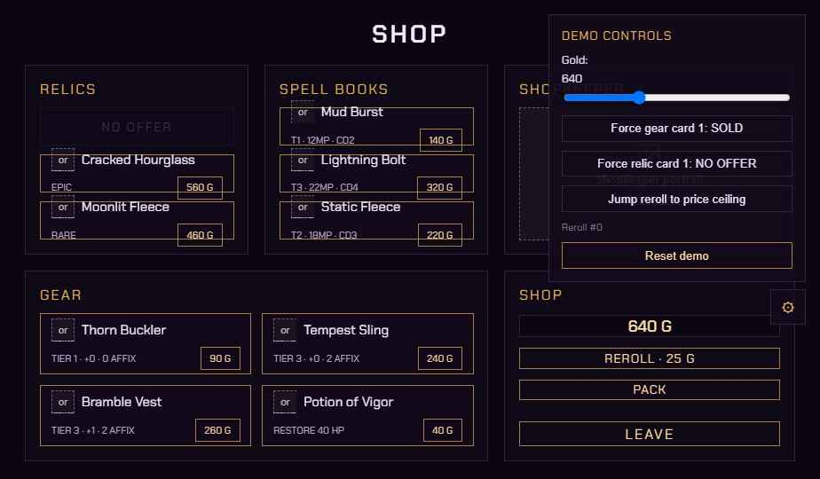

This note hands off the interactive shop prototype for independent review. It covers what the screen does, what changed from the original written handoff, open decisions that need a call, and where the working files live. The prototype itself is the source of truth for layout and behavior — this document explains it, not the reverse.
A single shop room: browse spell books, gear, and relics; hover a row for its tooltip; click once to arm a purchase, click again to confirm. A separate Pack button opens the player’s bag to sell items. Reroll replaces all offers at a doubling price with a hard ceiling. A demo-only debug panel forces sold-out, no-offer, and price-ceiling states for testing.



Unchanged from the original spec: reroll price doubling with a ceiling, the afford / unaffordable / sold / no-offer states, gold token coloring, the two-press Leave confirm, and Escape-to-cancel behavior.
Two decisions are still open and would benefit from an outside read before art and audio pass begins:
Secondary, lower-priority items: a visible keyboard focus ring on rows (currently tab-focusable but unstyled), and a confirm-pulse animation on the arm→confirm transition.
| File | Role |
|---|---|
Shop Screen v2.dc.html | Main interactive prototype — authoritative for layout and behavior. |
image-slot.js | Drag-and-drop icon/art placeholder handler. |
support.js | Shared runtime for state and template helpers. |
Prototype Notes.md | Running log of deviations from the written handoff. |
Final art assets will land at C:\Games\Prince's Palace-v2\Assets\_Project\Art. Every icon and the shopkeeper portrait are placeholder image-slot drops pending that handoff — no further wiring needed once art lands, just drag files onto each slot.
Reviewers: comment directly on the live prototype (Shop Screen v2.dc.html) for anything that needs to change — this document is a static summary of its current state.